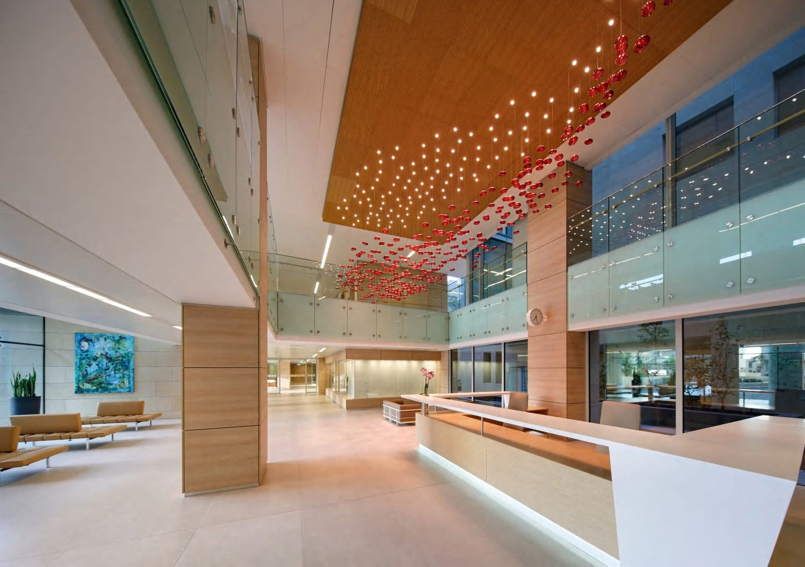
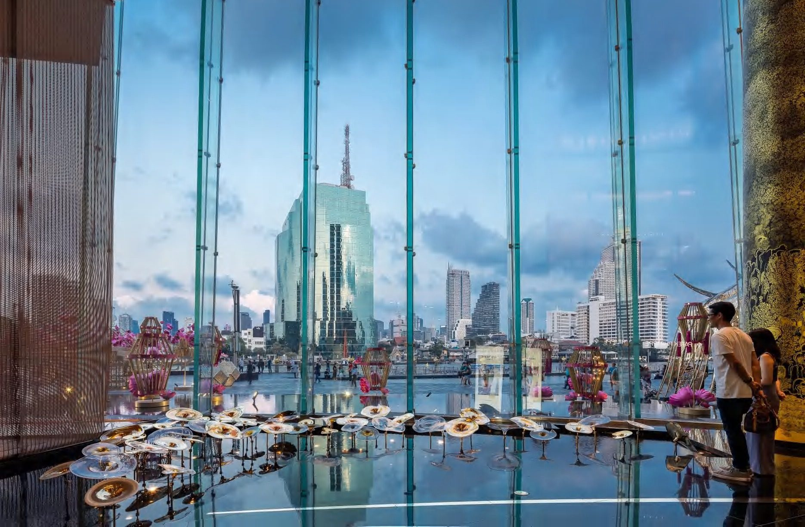

In hospitality, light is the first welcome and the last impression — and the most strategic design decision a property will ever make.
Long before a guest registers the furniture or the art, they have already felt the light. In hospitality, light is the first language a property speaks — and the one that decides whether arrival feels ordinary or unforgettable.
For luxury hotels, resorts and restaurants, lighting is not a finishing layer. It is the experience itself, engineered. A signature chandelier in a lobby becomes the property's portrait — the image guests share, and the reason a space photographs as well as it lives.
The lobby chandelier sets the emotional temperature of the entire stay. It tells the guest, wordlessly, what kind of place they have chosen. Get that single gesture right and everything that follows is read more generously.
Light governs how long people linger, how a menu reads, how a bar feels at midnight. Considered lighting lengthens the evening and lifts the room's perceived value — it is one of the few design investments that returns directly to the operator.

Hospitality runs on deadlines and repeatable quality. We are built for it — engineering, finishing and installing across multiple spaces and territories without surrendering the hand-made character that distinguishes the work. Pair the lighting with a designed ceiling and the public realm becomes a single, coherent stage.
Guests forget the room rate. They remember how the room made them feel.
We work alongside owners and their interior designers from the earliest mood through to the final aiming of every fitting. See the result in our hospitality projects, or start a conversation about a property in progress.
— The Atelier, The Stellar Kraft
We partner with hospitality groups and their designers to deliver signature lighting from concept to installation, on programme and at scale.
Begin a Commission →